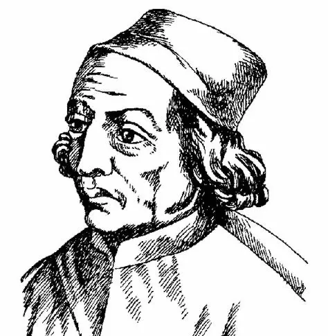
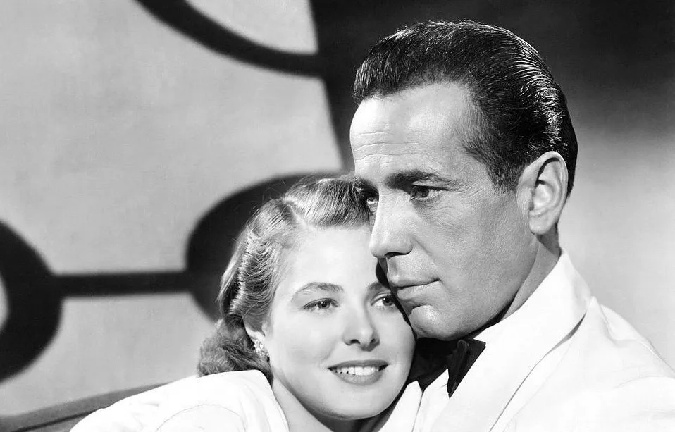
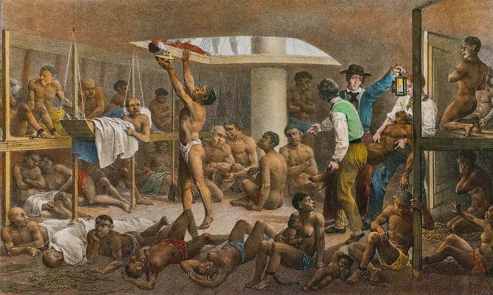
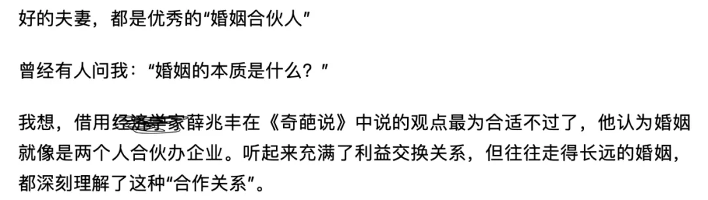
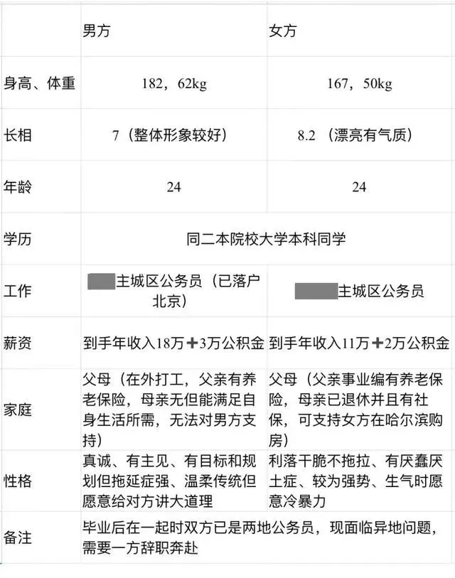
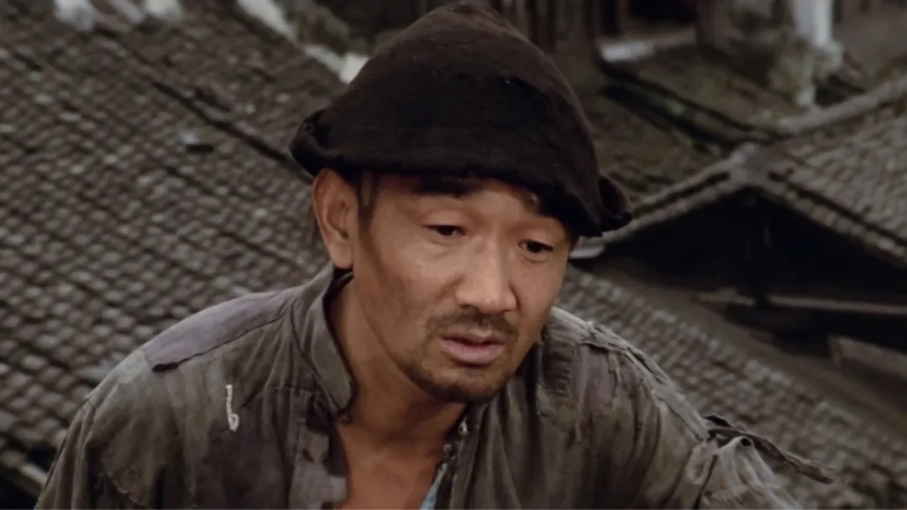

一 . 引言
前几天我的队友问我能否参加一场题为"恋爱脑有错/没错"的比赛，我本即没时间参赛，尤其听说我队持正方，我更立刻大大拒绝。队友认为本题反方简直毫无赢面，举出两个例子加以说明，一是王宝钏苦守寒窑挖野菜度日，二是恋爱脑女生为男朋友偷拍室友裸照。
队友好奇我何以支持反方，因此我稍作了说明。结论是，我也承认我的观点在当下的辩论环境和赛制中不可能赢。但关于我讲的内容本身是否有可取之处，我保留意见，遂有此文以作完整的解释。
二 . 混沌的语言
在展开说明我支持反方的理由之前，我先介绍我与队友沟通时面对的一个困境，即语言的不清晰。
固然，我一向反对使用"恋爱脑"这类高度概括的标签式词汇，我认为这些缺乏明确定义的标签在网络上漫天横飞，如何使用完全取决于表述者的个人理解，与帽子罪有异曲同工之妙。但我认为，这种程度的语意模糊对于辩论而言是可以解决的，双方总能找到一个共识的定义，再不济也可以用所谓的"进具体语境"加以处理。
在这里，真正要命的语意模糊是，讨论所用到的大量日常语言的含义是模糊的，而且几乎没办法由辩手临时赋予定义，比如，当我的队友义正辞严地提出——
即使是双方互相改变（也不行），对我而言，我宁愿自己一个人没有爱情和婚姻，开心快乐地活着，也不愿变成一个收获了爱情和婚姻，但是不像我自己的人。
我们的讨论完全无法继续下去，因为"我变成不像我的人"有太复杂的理解空间。最基本的，这可能意味着一个人身上某些特质被他人改变，那么一个人的特质是由什么决定的呢？
如果特质是先天被决定而不能改变的，人就是被先天决定的，那还谈何宁愿与不愿呢？如果特质可以被改变，所有改变都如我队友话中暗含的意思那样，代表着主体性的丧失并进而意味着失败和痛苦吗？
如果不是，那么为什么有些外力可以正当地使人改变，有些不行；为什么有些特质可以被改变而无所谓，有些不行？当然更重要的是，如果特质是能被改变的，"我不再像我了"，这个判断中的前一个我和后一个我，分别都指称什么呢？
这个表述在我们的日常生活中屡见不鲜，甚至是某些当代自诩独立进步的人士常挂嘴边的，可这种语言跟十五世纪的欧洲学者所使用的语言一样粗糙，费奇诺在《柏拉图<会饮>评论》（这是历史上最早提出"柏拉图式的爱情"的文献）里就已经说过，爱情是最严重的瘟疫，因为它能够直接导致变形，使人抛弃本性，容纳陌生的东西。
费奇诺的年代当然不必解释何为人的本性，关于人的自由意志和本性的讨论要到十九世纪乃至二十世纪才真正深入，但二十一世纪的人，仍然用这样的语言组织自己的信条，并标榜自己是新时代的，就显得无力。
那么，何以我们能乐此不疲地宣扬这种自己都不理解的信条？
三 . 独立的人格
我认为这得"归功于"如下两点，一方面启蒙运动坚持不懈地劝诫我们每个人都要坚持主体性，要求我们自作主人；另一方面资本主义不遗余力地向我们展示无痛的、积极的个人主义生活方式。
启蒙运动强调奴隶是一无所有的，要求人靠个人的理性站起来打破旧世界的权力秩序，贬低忠诚、顺从等等可能与奴隶相关的评价。广义的奴隶和广义的主人对照着一切权力关系，以至于在今天贤妻良母可能是一种侮辱性评价，以至于如果有人敢在正式的公开场合直言"即使在现代社会人也有三六九等"将被视为不雅观的。
就好像承认现存的不平等也是耻辱的一样。
恋爱脑显而易见地更容易导向不平等的关系，因而自然地成为启蒙理性着力批判的对象。
资本主义讨厌阻碍流通和循环的消极性因素，最好能在任何环节中减少摩擦，拒绝风险，更敌视痛苦。疯狂的迷情意味着风险，卡萨布兰卡式的充满未知的爱情则很可能造成与里克·布莱恩一样的痛苦，因此它们正在逐渐消失。
取而代之的是越来越多的交友软件把男女的信息都列出来，给双方营造一种皇帝选妃一般的掌握感。信息匹配让双方尽可能"合适"，而严格的聊天规则和匿名处理为他们确保在遇到痛苦时能无成本地快速退出。
但正是这些无痛处理让爱情萎缩为一种无需承担风险的消费活动，此前爱情的危险性正来自于遇到未知的、不同于己的他者，而当这些危险被逐步剔除的时候，交友就变成了一种在对方身上寻找和确认自己的行为（即使你的交友标准恰好是"与我相反"，这个标准也是你自身的一部分）。
恋爱脑更倾向于牺牲的选择在今天不可被接受，一部2012年上映的电视剧在十多年后突然被翻出来不是毫无原因的，追根究底可能得回看一下这十年来，资本主义意识形态的地位在"北印度"发生了什么变化。
四 . 懦弱的奴隶
启蒙运动和资本主义的上述宣教至少是当代人在爱情方面不幸的一部分原因，也许启蒙运动这样做的目的是为了鼓动人们打破旧的枷锁，但或有意或无意地，当代启蒙精神忽略了黑格尔主奴辩证法中的另一个部分。
固然，在经历生死搏斗后，贪图生命而选择依附于胜利者的懦弱意识沦为奴隶意识，变为主人的附庸。但奴隶作为主人的财产，同时受到主人的认可和保护，生死搏斗构建起的是互相认可且内部不平等的结构，而绝非单向的纯粹不平等。
进而，主奴辩证法的真正核心是后半部分，奴隶在劳动中通过改造异在认识到自我，克服对主人的畏惧和对自然的依赖，建立自主性，而主人则在享受中越发依赖奴隶，最后奴隶与主人同步迈入自由意识。
这个过程是必然的，不是偶然的。这正是旧秩序中能够酝酿出启蒙运动的逻辑基础，但现代启蒙精神却忽略了这个部分，把臣服于他人、丧失自主性描述为完全不可接受的绝对错误。并且要求现代人保持强势，服从他人的意志、为他人承受痛苦就是软弱的负面教材。
但我丝毫不相信这种强势能真正让现代人获得幸福，因为这种强势的背后是对痛苦的惧怕，而主奴的生死搏斗中，身体的力量和精神的力量都只能决定一时的优劣，真正的结果取决于面对死亡的能力，不能掌握死亡的自由的人，就不可能在战斗中押上整个生命。按照黑格尔的描述，能承受痛苦乃至死亡的人，胜利则变为主人，失败则死去，只有不舍得放弃"徒然的生命"的人，才最终沦为奴隶。
高贵、自由、独立的现代人，我们比三百年前更善于面对死亡吗？
如果有些猝死的人是由于落入重复不断的自我剥削，我想也是一种倒毙在路边的奴隶而已。
说回爱情的不幸，不敢面对痛苦的"非恋爱脑"是当代的绝大多数，这让他们舒适的同时永远不可能踏出向爱情的第一步。但出于本性，他们仍然渴望爱情和亲密关系，因此衍生出种种不同的退而求其次。
在比较现实的语境下，有些人开始自觉地把伴侣称为"合伙人"或者类似的词汇，凸显婚姻中由法律所规定的财产共享、风险共担的部分，就好像这种财务关系比起交友软件上那种消费关系更高贵，还要美其名曰是精神伙伴，但实际上如何区分亲密的合伙人和伴侣呢？靠性吗？
在这样的长期生活当中也许仍能沉淀出一种潜藏在意识深处的熟悉感和特殊感，但我们能接受爱情是全无超验性维度的经验积累吗？
在更多短促的快感获取中，有些人把伴侣抽象为CP，把对爱情的评价简单化为"甜"，进而"好嗑"是最高的标准。这个标准从旁观者口中说出来时似乎无伤大雅，嗑CP，用最高效的方式满足了对爱情观赏的幻想式体验；但当真的有人把"甜"代入自身的爱情标准时，"我要谈一场甜甜的恋爱"就显得幼稚而无味。甜能够涵盖爱情的所有要素吗？
抛开这些退而求其次不谈，回到启蒙理性所倡导的独立性，正是它作为追求爱情的阻碍。
我不是在说顺从和卑微是真爱的基础，因为丧失独立性不必然意味着被暴力占有或强行扭曲，主奴辩证法里的奴隶不是被动地接受一切，实际上他正是因为不接受死亡才沦为奴隶，接受死亡的就死了。
丧失独立性后的另一种可能是什么呢？正如韩炳哲引用马尔西里奥·费奇诺的诗所要解释的那样，存在一种"由人及己的回归"，即爱情的本质在于将自己置于他者之内而忘我，为他者而牺牲自我，并在这个过程中得到他者的馈赠而回归自我。
主奴辩证法的这种馈赠结局是共同步入自由意识，爱情的这一辩证法的结局则是双方互相把自身置于他者之下，从而实现一种新的、充满体谅包容的、平等的循环，也即真爱。
"我爱你，而你也爱我，我在你中找到我，而你也想念我，我将自己舍弃，进入你，而你接受我，于是我找回了自己。"
马尔西里奥·费奇诺
这里或许可以补充中国哲学的解释，仁的核心含义是"爱人"，起源于人对人的良好情感。实现仁的方法是"忠恕"，也就是"己欲立而立人，己欲达而达人"，换言之，个人的幸福必须被放置在与他人的关系当中考察，爱人的情感必须从为他人的彻底奉献开始。
五 . 自由的活动
我还需要澄清另一个误会，我不是在强调爱情这种精神活动如此特殊以至于其似乎独自站在启蒙理性的对立面，我恰恰是要说所有必须基于自由意志的精神活动（有些活动可以出于自由意志，也可以出于强迫）都得站在（这种流俗的）理性的对立面。
比如我们不可能被命令爱上一个人，也不可能在爱上一个人以前预知自己会爱上他，更不可能拿条件筛选出所有我会爱上的人——当一个人把对方的家世、学历、收入、车房、性格、爱好都列出来让网友帮他提提意见的时候，他已经不可能是在寻求爱情了。
但是，我们有时候可以在爱上一个人后说出理由，这说明爱情当中并非全无逻辑，并不是完全反理性的，而是我们不能凭借理性去抉择而已。
同样的，信仰也是必须基于自由意志的精神活动。
我并不是在比较了不同的宗教并确定了基督教的最佳理由之后才获得对基督的信仰的——选择基督教是有理由的，但这些理由只有在我已经做出选择，即做出信仰的飞跃之后才会出现。
祁克果
而且并不限于宗教信仰，上世纪在低教育水平的中国有如此多的人成为了坚定的马克思主义者，不是基于对世界历史的全面考察和反省，而是基于自身作为无产阶级的经验。
我猜当中的大部分人都做不到独立、系统地论述"ZhongGuo为什么必须走Marxism道路"，因此他们自己也不得不同时把共产主义称为理想和信仰，甚至于更多的是信仰。
六 . 神圣的牲畜
柏拉图在《理想国》中提出了国家正义和个人正义同构的模型，当上等人正当地统摄着下等人，当理性正当地支配着欲望，国家和个人就实现了各自的正义，暗示着在一个时代下，个人与国家所面对的问题具有某种相似的结构。
而今天，沿着西方哲学设计出的现代政治制度仍具有这一特点。
启蒙理性没有让个人得到真正的解放，只是使个人从他人的奴隶转变为自己的奴隶，甚至在自我剥削的程度上更加严重，在面对死亡的能力上更加软弱了。
同样的，在国家层面我们似乎也没能完全按照理性（无论是早期启蒙式的理性还是康德那种能上升为一般准则的普遍理性）建立起真正自由平等的政治制度——
启蒙运动推翻传统政治秩序并建立民主制度的尝试几乎宣告失败，各类主人正在以不同形式重返现代社会——父权、DuCai、MinCui、原教旨主义，不一而足。君主无非是从"天下万民的君父"，摇身一变成为"国家的第一仆人"罢了。
更重要的是，政治领域的变化并不来自王朝复辟，而是民众的主动要求的产物，让伊朗回归宗教统治的革命是人民发起的，欧洲现在的部分纳粹政府是民选上台的，即使这些都太遥远的话——
以享受的姿态接受迷你植物块茎的爱称，在适当地侮辱中"奶凶"地表达无力的不满，以乞求某种来自父亲形象（或者最次是"长子"）的安抚，难道不是正在身边发生的吗？
在这些问题能得到解决之前，或许无怪阿甘本激进地认为"人类共同体的每一种分隔，都在其中包含和保有一个纯然宗教性的内核"，而现代政治仍然没有脱离宗教社会的模式。
当一个皇帝向你保证你是法定的臣民，并提出一些诸如忠孝之类的价值观来放到你身上的时候，这保证当中暗含了另一个意思，即不符合这些价值的人就可以被剥夺政治身份，像猎巫一样被弃置给域外的宗教主宰。
这些被剥夺政治生命的人就成为赤裸生命，也就是神圣人；他们的死亡维系了皇帝的许诺，进一步确认了臣民的边界，他们是被用于维护宗教秩序的祭品，因此又是牲人。
我们需要一个例子来证明阿甘本的错误。
如果哪天理性能取代信仰维系社会的秩序，我们或许可以期待理性代替爱情维系人的亲密关系。
七 . 癫狂的超人
1783年12月康德在向《柏林月刊》投稿的文章中对当时流行的启蒙提出了新的定义——"强制传播正确思想，而非让人运用自己的理性"。几百年后，正确思想、政治正确层出不穷，显然康德的批判仍未过时。
欧洲浪漫主义运动在相当长的时间内，都被误解为彻底地反对理性和反对启蒙，但实际上，早期浪漫主义思想本身就是德国古典哲学的重要组成部分，他们所反对的仅仅是这种流俗的启蒙和强制的正确，仅仅是深受霍尔巴赫、拉美特利式的机械唯物论影响的理性。
而当你把浪漫主义运动中的文艺作品代入现代标准时，它们中的主人公几乎无一不是"恋爱脑"——
用现代的语言来描述，简·爱嫁给二婚、残疾、有骗婚前科且比自己大二十岁的罗切斯特；安娜·卡列尼娜先是为了追求她自认为的爱情婚内出轨导致家庭破碎，又为了爱情的失去而选择卧轨自杀；少年维特为爱吞枪，少女阿达拉为爱服毒，哪一个不是恋爱脑呢？（英俄德法都有了）
这些恋爱脑们在历史上一度成为人最光辉之自然本性的代表，是尼采所谓的超人，他们的后继者在今天却遭到嘲笑和批评，这些批评当然不是全无理由的——
成为超人痛苦而又危险，否则《罪与罚》里的拉斯科尔尼科夫就不会因为难以承受超人的精神压力而崩溃，跪下亲吻大地并忏悔罪行；浪漫主义激情也很容易退却，影响浩大的欧洲浪漫主义运动仅仅持续了三四十年就结束了，法国浪漫主义迅速走向了虚无主义。
资本主义时代下懦弱的现代人当然最懂得如何舒适健康地度过一生，我们永远不会冒死亡的风险去尝试爱情，其实也通常不会冒死亡的风险去尝试其他。
高举"自由人格"、"独立女性"之类内涵不明的新式教条，在流俗启蒙的抚慰下不断宣布精神胜利，经年累月地自我剥削而内心疲惫不堪，在政治活动中无能为力，在亲密关系上一败涂地，拿语言当做遮羞布——你是独身主义者，他是乐子人。都可以。
我这一生如履薄冰，你说我能走到对岸吗？
当然能，别担心，体面的末人。如果你还有所谓彼岸的话。
八 . 结语
谢谢你在看完前文如此多的刻薄语言后仍然读到这里，我并非站在恋爱脑的立场上攻击谁，因为我自身也是抱持理性的懦弱者（否则情人节我就不该把时间花在写这种文章上），我并无苦守寒窑之勇，且目前仍未打算挑战摆脱末人之困境。
我写此文仅仅是为了从理性主义与意志主义的冲突、启蒙运动自身的辩证运动发展的角度，论证恋爱脑绝不等价于蠢人或坏人，为恋爱脑找出那么一点点的独特价值而已。
归根结底，我并不认为这是个极其重要而必须立刻解决的问题，我甚至觉得现代性在爱情方面的问题远不如在政治方面的问题更重要，这也是我为什么会在本文中横插"神圣的牲畜"一节的原因。
本文真正的主旨是——我们不太有资格给恋爱脑下判决，并祝你能在新的一年中收获真爱。